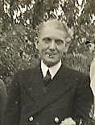

Harold Victor Neville Cowell 1920 - 1987
[ Home ] | [ Calendar ] | [ Surnames Index ] | [ Errors ] | [ Family History ]The younger of 2 children of Troward Cowell (a x434 portsmouth rm police life pensioner ex royal navy) and Frances Beerling, Harold Cowell, the second cousin once-removed on the mother's side of Nigel Horne, was born in Thanet, Kent, England on 22 May 19201 and married Nancy Moppett (with whom he had 4 children: Paul Anthony Troward, Lynne F, Susan E and Sally B, along with 3 surviving children) at St Mark's Church, North End, Portsmouth, Hampshire, England on 26 May 19433.
During his life, he was living at 9 Mill Row, Birchington, Kent, England on 19 Jun 19216; at Pittville Circus Road, Cheltenham, Gloucestershire, England in 19564; at 1 Chandos Road, Newbury, Berkshire, England in 19605; and at 7 Wendan Road in Newbury in 1987. Harold appeared in Portsmouth Evening News on 8 Jun 1943
He died on 17 Jul 1987 in Reading, Berkshire, England1,2.
Parents
- Troward was born on 18 Jan 1893
- Frances Annie was born on 18 Nov 1891
Children
- Paul Anthony Troward was born on 22 Jun 1947
Citations
- England & Wales deaths 1837-2007 - Findmypast
- England & Wales Government Probate Death Index 1858-2019 - Findmypast
- British Newspaper Marriage Notices - Findmypast
- Gloucestershire, England, Electoral Registers, 1832-1974
- Electoral Roll
- 1921 Census Of England & Wales - Findmypast (was age 1 and the son of the head of the household)
Media
Harold V N Cowell - probate
Harold Victor Neville Cowell

Gloucestershire, England, Electoral Register
1960 Electoral Register
England & Wales deaths 1837-2007 Transcription - BMD-D-1987-7-76035583
England & Wales births 1837-2006 Transcription - BMD-B-1920-2-AZ-000362-018
England & Wales marriages 1837-2008 - BMD/M/1943/2/AZ/000250/008
England & Wales marriages 1837-2008 - BMD/M/1943/2/AZ/000840/107
England & Wales Government Probate Death Index 1858-2019 - GBOR/GOVPROBATE/C/1987-1987/00043797
1921 Census Of England & Wales - GBC/1921/RG15/04431/0567/02
British Newspaper Marriage Notices - FN-M-5B8516A5-933D-4A60-853F-D5E8E7D7D3F3
Family Tree

Map
Generated by ged2site. Last updated on Jul 3, 2024
Known Issues
Residence record for 1987 contains no citation
Listed in the residence for 1956, but spouse Nancy Moppett is not
Listed in the residence for 1987, but spouse Nancy Moppett is not
1939 UK register information missing